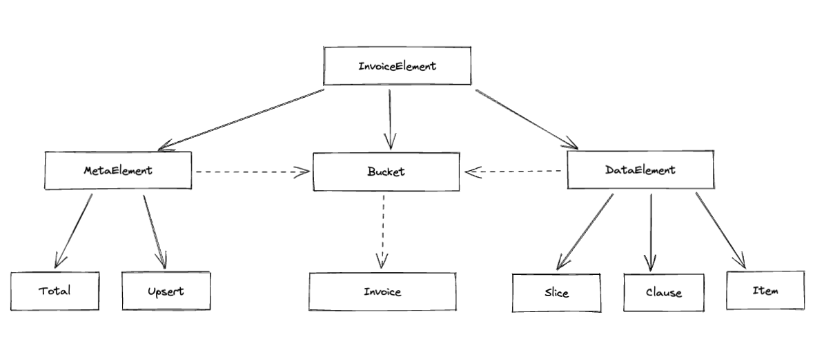

Hermitage
Библиотека для работы с декларативными запросами к хранилищам данных.
Идея
Каждое хранилище данных предоставляет свой способ сформулировать запросы к этим данным. Это может быть старый добрый SQL, может быть чуть по новее, но не менее няшный JSON, а может быть и суровый проприетарный бинарный протокол или еще какой Redis API.
Вот было бы здорово иметь возможность скрыть все эти сложности за единым уровнем абстракции, не заморачиваясь в процессе проектирования на конкретику хранилищ данных.
В конце концов, когда мы делаем заказ в каком-нибудь интернет магазине, мы не задумываемся о том как у них устроены стеллажи с товарами и как бы нам максимально удобно сформулировать запрос, чтобы бегать между ними пришлось меньше. Мы просто накидываем в заказ позиции.
Библиотека hermitage как раз оперирует абстракциями реального мира для составления запросов к данным.
Нотация
Давайте рассмотрим описание составных частей запроса данных и представления ответа, которые составляют декларативную нотацию hermitage.
Диаграмма связей представлена на рисунке ниже

Здесь сплошные стрелки означат отношение наследования, пунктирные - включения внутрь контейнера.
Invoice
Основной контейнер запроса, в нем задаются его составные части (позиции и ограничения)
Bucket
Логически - набор связанных между собой единиц хранения (Item, см. ниже подробности). Физически это может быть таблица в реляционной БД, коллекция в документоориентированной, s3 bucket, каталог на жестком диске и тд.
У бакета обязательно должно быть имя.
from hermitage.notation import Invoice, Bucket
invoice = Invoice(
Bucket("users")
) # Чуть более осмысленный и по-прежнему бесполезный, но рабочий запрос
Бакеты могут вкладываться друг в друга, декларируя свои отношения
from hermitage.notation import Invoice, Bucket
invoice = Invoice(
Bucket(
"users",
Bucket(
"articles",
Bucket(
"comments"
)
)
)
)
Бакет может указать родительскому бакету в какой виртуальной единице хранения будут выводиться его результаты
from hermitage.notation import Invoice, Bucket
invoice = Invoice(
Bucket(
"users",
Bucket(
"articles",
).label("user_articles")
)
)
Бакет может указать родительскому бакету в каком контексте его нужно интепретировать при построении схемы отношений. Это полезно когда один и тот же бакет может нести разный семантический смысл. Например, нам надо запросить статьи с указанием автора и редактора. Но автор и редактор это наследники сущности пользователь и хранятся в одном бакете users. В таком случае мы легко можем выразить свои намерения, используя метод qua бакета.
from hermitage.notation import Invoice, Bucket
invoice = Invoice(
Bucket(
"articles",
Bucket(
"users",
).qua("author"),
Bucket(
"users",
).qua("editor")
)
)
qua и label можно комбинировать
from hermitage.notation import Invoice, Bucket
invoice = Invoice(
Bucket(
"articles",
Bucket(
"users",
).qua("author").label("article_author"),
Bucket(
"users",
).qua("editor").label("article_editor"),
)
)
Item
Основная единица хранения. Физически это может быть поле/строка в БД, файл на диске, поле/строка в текстовом файле и тд
from hermitage.notation import Invoice, Bucket, Item
invoice = Invoice(
Bucket(
"articles",
Item("id"),
Item("title"),
Item("content"),
Bucket(
"users",
Item("id"),
Item("name")
).qua("author"),
)
) # Полностью осмысленный, полезный и рабочий запрос.
Так же Item может принимать словарь. Обычно, это полезно в инвойсах на запись (подробнее об этом чуть позднее)
from hermitage.notation import Invoice, Bucket, Item
invoice = Invoice(
Bucket(
"articles",
Item(
dict(
id=1,
title="About the nature of things",
content="WIP"
)
)
)
)
Clause
Элемент декларации некоторого условия. В SQL максимально близкие аналоги: WHERE, ORDER BY, GROUP BY
import datetime
import zodchy
from hermitage.notation import (
Invoice,
Bucket,
Item,
Clause
)
invoice1 = Invoice(
Bucket(
"articles",
Item("id"),
Item("title"),
Item("content"),
Clause(
"created_at",
zodchy.operators.GT(datetime.datetime(2024, 7, 1))
)
)
) # Выбрать все статьи созданные не позднее 1 июля 2024 годв
invoice2 = Invoice(
Bucket(
"articles",
Item("id"),
Item("title"),
Item("content"),
Clause(
"created_at",
zodchy.operators.DESC()
)
)
) # Выбрать все статьи, отсортированные по дате создания начиная с самой новой
Clause элементы могут быть объедены логическими операторами (если это семантически оправданно, конечно. Нет смыла объединять условие ORDER и WHERE)
import datetime
from zodchy.operators import EQ, GT, SET
from hermitage.notation import Clause
clause = (Clause("id", EQ(12)) | Clause("id", EQ(13))) & Clause("created_at", GT(datetime.datetime(2024,7,1)))
# Первая часть условия в скобках показана для примера операции ИЛИ. В реальности она может быть заменена
# на более подходящее: Clause("id", SET(12, 13))
Slice
Элемент декларации способа нарезки итогового результата на порции
import zodchy
from hermitage.notation import (
Invoice,
Bucket,
Item,
Slice
)
invoice1 = Invoice(
Bucket(
"articles",
Item("id"),
Item("title"),
Item("content"),
Slice(zodchy.operators.Limit(100)),
Slice(zodchy.operators.Offset(10)),
)
) # Выдать 100 статей, начиная с 10-ой
Основное отличие Slice от Clause, помимо очевидной семантики, отсутствие целевого параметра.
MetaElement
Способ декларировать дополнительную информацию о данных. В рамках библиотеки определяются два мета элемента:
- Total - позволяет указать в запросе на необходимость вернуть вместе с результатом общее количество строк
- Upsert - позволяет указать в запросе что Item нужно или обновить или вставить (при отсутствии совпадений по условию)
import zodchy
from hermitage.notation import (
Invoice,
Bucket,
Item,
Slice,
Total,
Upsert
)
invoice1 = Invoice(
Bucket(
"articles",
Item("id"),
Item("title"),
Item("content"),
Slice(zodchy.operators.Limit(10)),
Total()
)
) # Вернуть данные (10 записей) и рядом приложить общее их количество
invoice2 = Invoice(
Bucket(
"articles",
Item(
dict(
title="Hello",
)
),
Upsert(Clause("id", zodchy.operators.EQ(12)))
)
) # Обновить запись с id=12, если такая не найдена - вставить
View
Обертка для представления результата выборки данных
from hermitage.notation import View
# Do some calulations
view = View(data=data, meta={'total': total})
Адаптеры
Так как библиотека является частью zodchy стека, то в нее добавлен адаптер, который позволяет преобразовать сущности CQEA архитектуры в hermitage нотацию, описанную выше.
import zodchy
from hermitage.adapters import CQEA
# Определяем шаблон запроса, где мы можем опционально задать условие поиска по id и/или name и
# также указать необходимость/порядок сортировки по name
class GetUsersQuery(zodchy.codex.cqea.Query):
id: zodchy.codex.query.FilterBit[int] | None = None
name: zodchy.codex.query.FilterBit[int] | zodchy.codex.query.OrderBit | None = None
# сам экземпляр запроса может выглядеть так
johns = GetUsersQuery(
name=zodchy.operators.LIKE('john') + zodchy.operators.DESC(),
id=zodchy.codex.query.GTE(10)
) # найдем всех Джонов и Джонни и прочих Джоанн, начиная с id=10 и отсортируем найденное по id от большего к меньшему
# создаем экземпляр адаптера
adapter = CQEA()
# и скармливаем ему CQEA запрос
data_query = adapter(johns) # на выходе получаем генератор объектов DataElement
print(list(data_query))
# >>> [
# Clause(name='name', operation=zodchy.operators.LIKE('john)),
# Clause(name='id', operation=zodchy.operators.GTE(10)),
# Clause(name='name', operation=zodchy.operators.DESC())
# ]
Может возникнуть резонный запрос - зачем вся эта цепочка преобразований? Ответ выходит за рамки описания библиотеки hermitage, но если вкратце - разделение зон ответственности. zodchy.codex.cqea.Query это сущности бизнес логики приложения, в процессе прохождения по бизнес процессу, эта сущность может несколько раз перерождаться, обрастая новыми условиями (например в процессе авторизационного аудита), чтобы в итоге прийти в слой хранения, где она будет отражена на конкретную комбинацию полей хранения.
Описанный выше адаптер работает в простейшей ситуации когда поля сущности QUERY 1 в 1 отображаются на поля сущности хранения. В остальных случаях придется писать ручное преобразование
Если же мы используем hermitage в проектах без CQEA, то данный адаптер можно и не изучать.
Преобразователи
Преобразователь (transformer) - callable объект, применяемый к полю запроса. Обычно работает в связке с адаптером
Возьмем запрос из прошлого примера
from hermitage.adapters.transformer import Replace
johns = GetUsersQuery(
name=zodchy.operators.LIKE('john') + zodchy.operators.DESC(),
id=zodchy.codex.query.GTE(10)
)
# предположим, что у нас в хранилище поменялось название поля в БД c name на user_name,
# но мы не хотим из-за этого менять бизнес сущности запроса GetUsersQuery (и не надо, для этого весь этот bicycle race и задумывался),
# поэтому, мы просто добавим в адаптер трансформер Rreplace
adapter = CQEA()
data_query = adapter(johns, Replace(search_field='name', replace_field="user_name"))
# и на выходе получим соответствующий Clause(name="user_name", operation=zodchy.operators.LIKE('john)). Победа
А теперь предположим что изощренный вирус разделил на 2 все четные id наших пользователей. Человек с ключами от базы заперся в туалете и плачет, а нам надо решить вопрос. И снова на помощь приходит трансформер Replace
# Определяем функцию которая будет работать со значениями поля
def double(x: zodchy.codex.query.FilterBit[int]) -> zodchy.codex.query.FilterBit[int]:
return type(x)(x.value * 3)
adapter = CQEA()
# здесь мы не меняем название поля, поэтому replace_field не нужен, просто указываем callable сущность,
# которая будет применена к значениям поля, если такие будут в запросе
data_query = adapter(johns, Replace(search_field="id", replace_entity=double))
Можно писать свои адаптеры, контракт есть в definitions/contracts/adapters.py